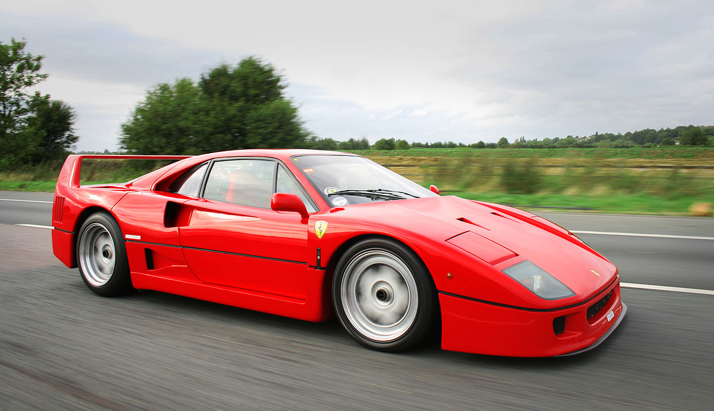

Ferarri F40

| Overview | |
|---|---|
| Manufacturer | Ferrari |
| Production | 1987–1992 (1,315 produced) |
| Assembly | Maranello, Italy |
| Designer | Pininfarina (Leonardo Fioravanti) |
| Engine | 2,936 cc (2.9 L) twin-turbocharged Tipo F120A V8 478 PS (352 kW; 471 hp) |